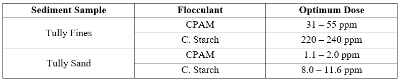
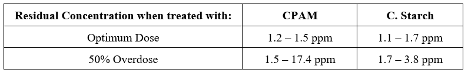
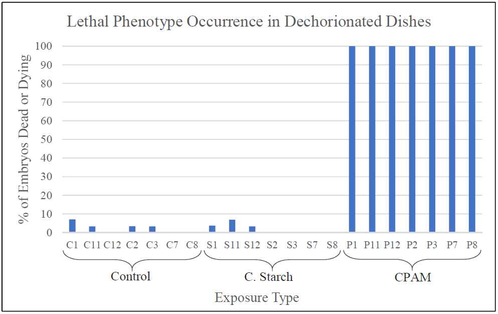
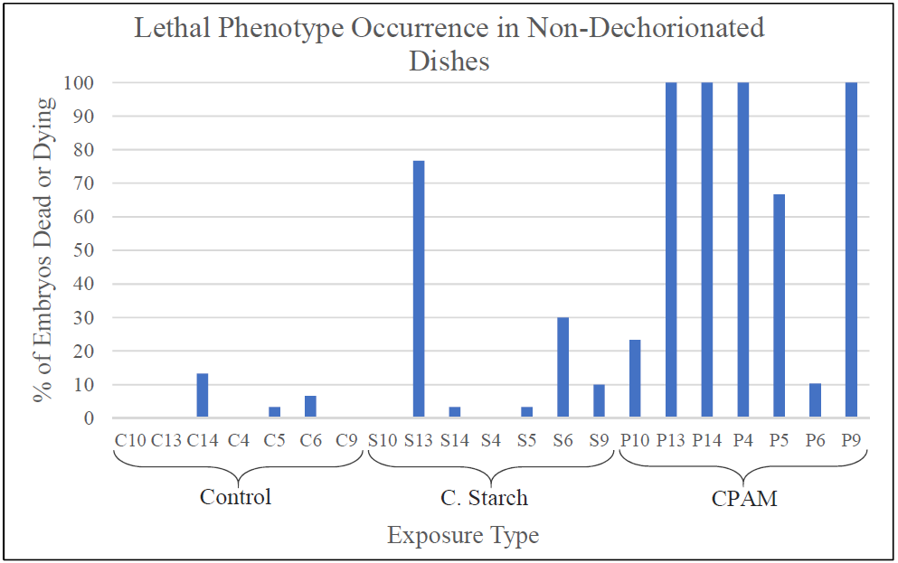
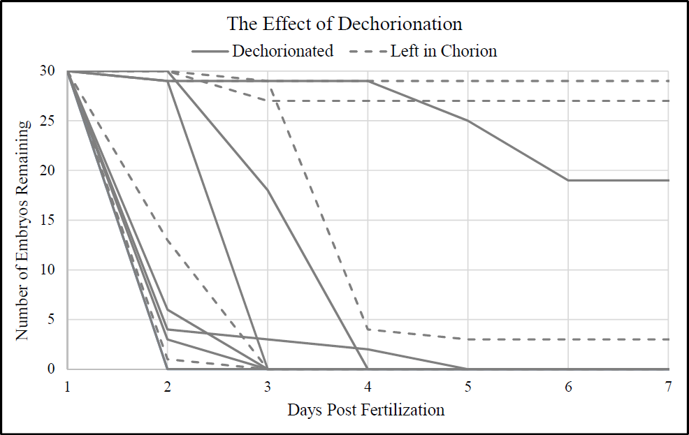
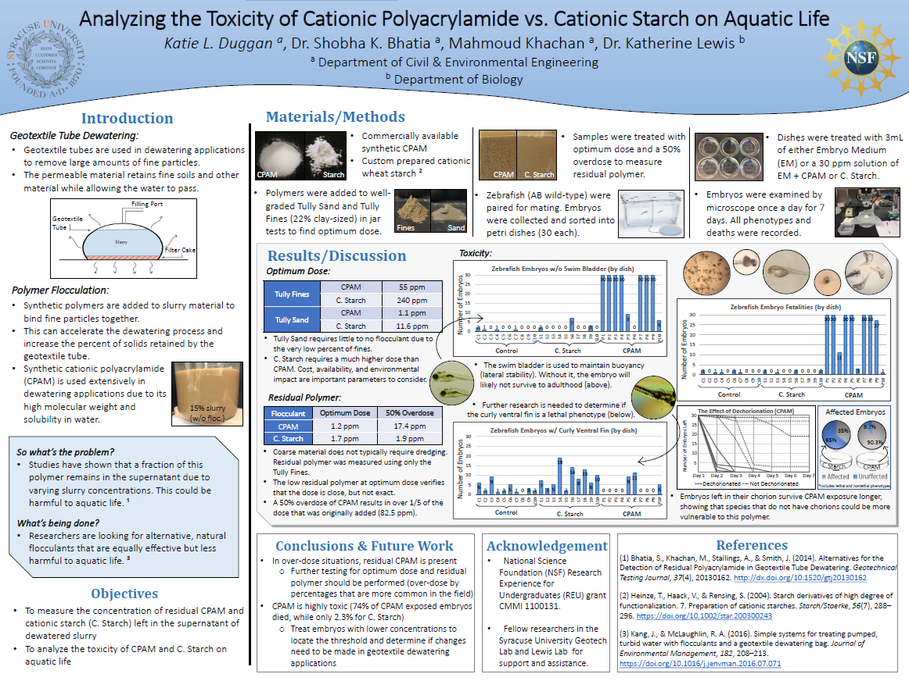

Optimum dose of CPAM and C. Starch for the Tully Fine and Tully Sand soil samples. 
Tully Fine required higher doses of both polymers than the Tully Sand. Sand particle sizes are typically already large enough to be retained within the geotextile tube, and therefore do not typically require a large dose of flocculant. C. Starch requires a larger dose in order to achieve similar flocculation and improvement in dewatering capabilities as CPAM. The fine particles require a larger dose to completely flocculate the sample for efficient dewatering, and more C. Starch is needed to achieve the same levels as CPAM.
Although the optimum dosage of cationic starch is higher, the cost of the CPAM is approximately four times greater than that of the cationic starch. This indicates that the increase in optimum dosage does not lead to an increase in the overall cost.
It was observed that flocs formed by using CPAM were larger than by using C. Starch. Therefore, only Tully Fine was used for further testing of residual polymer concentration.
Residual polymer in samples treated with optimum dose and a 50% overdose. 
The samples show substantially low residual polymer concentrations when treated with optimum dose of CPAM and C. Starch (i.e., 1.2 ppm and 1.1 ppm, respectively). Since optimum dose refers to the ideal amount of flocculant that achieves proper flocculation but does not result in excess polymer, these low values are expected. These results also verify that the optimum dose determined previously is substantially close to the actual optimum dose, but not perfectly accurate (exact optimum dose would theoretically result in ~0 ppm residual concentration).
The residual concentration of C. Starch suggests that residual polymer may not be a concern when using C. Starch in geotextile tube dewatering. However, the residual concentration of CPAM was as high as 17.4 ppm. While a 50% overdose may be higher than what is likely to occur in the field, these results demonstrate that overdosing of CPAM is a potential environmental concern.
In the toxicity experiments, far fewer abnormal phenotypes were observed in embryos exposed to C. Starch than embryos exposed to CPAM. The most common phenotype observed in CPAM exposed embryos was a burst open yolk sac (the yolk sac provides food/nutrients during the early stages of life). If the embryos survived the initial burst yolk sac, necrosis (i.e. death of cells) began to appear shortly after, which ultimately killed the embryos.


CPAM affected the embryos relatively quickly, often causing fatalities and sometimes killing all 30 embryos in a dish within two hours of dechorionation. Most of the dechorionated embryos died by 2–3 dpf. In contrast, embryos that were left in their chorions usually survived to 4 dpf, and some survived until 7 dpf. In addition, 100% +/− 1.10 of the dechorionated embryos exposed to CPAM were dead or dying by 7 dpf compared to 71.8% +/− 0.414 for non-dechorionated embryos. Taken together, these results suggest that the chorion has a partially protective effect against CPAM exposure.

